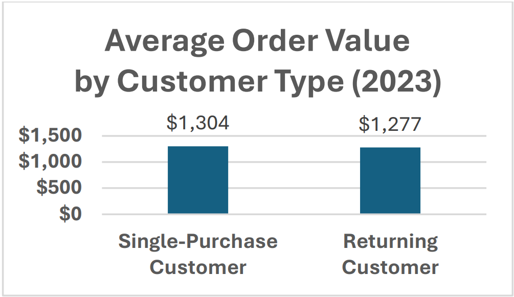
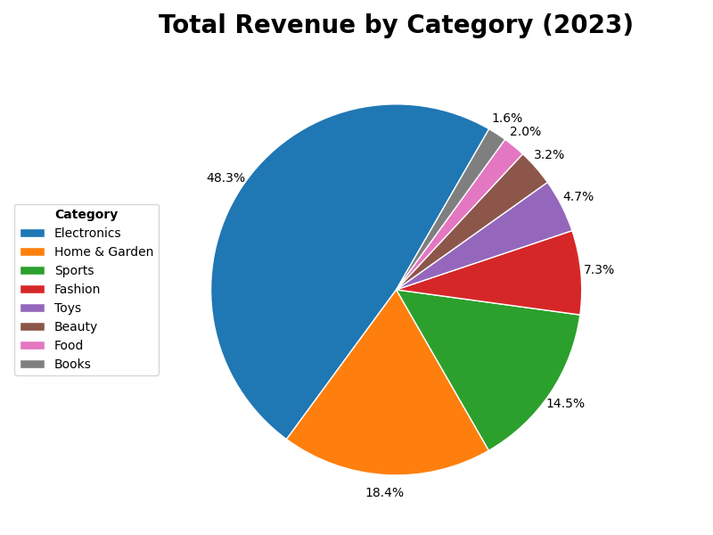
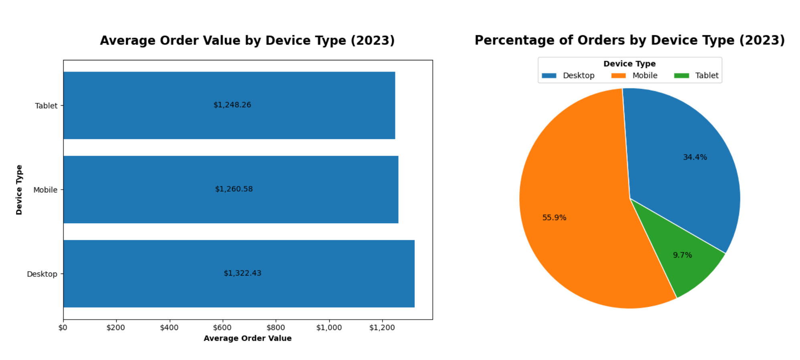
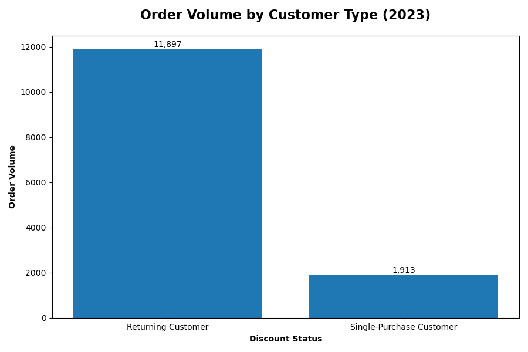

Project Overview
This project analyzes a 2023 e-commerce dataset by answering the same business questions using two analytical workflows: Excel Pivot Tables and Python (Pandas + Matplotlib). Findings show that revenue is concentrated in Electronics, Home Garden, and Sports products and is driven primarily by customer retention rather than discounts, device choice, or delivery speed. These results suggest that long-term growth efforts should prioritize repeat purchasing behavior over short-term tactical optimizations. A comparison of how each tool affects analysis speed, reproducibility, scalability, and visualization is also provided.
Excel Analysis
5 business questions
Python Analysis
5 business questions
Last updated
March 2026
Key Business Findings
- Revenue concentration: Revenue is concentrated in Electronics, Home & Garden, and Sports.
- Discounts: Discounts show little measurable impact on average order value.
- Customer retention: Returning customers drive revenue primarily through higher purchase frequency.
- Device usage: Mobile dominates order volume while desktop shows slightly higher average order value.
- Delivery experience: Delivery speed shows minimal relationship with customer ratings.
Both tools produced consistent analytical conclusions. The primary differences emerged in workflow efficiency, automation potential, and long-term scalability.
Excel vs. Python: Workflow Comparison
- Speed for ad-hoc analysis: Excel Pivot Tables allow rapid aggregation and exploration with minimal setup, making them ideal for quick business questions.
- Automation and reproducibility: Python requires more setup but produces a fully reproducible workflow for data cleaning, aggregation, and visualization.
- Scalability: Excel performs well for moderate datasets but may become cumbersome at scale. Python is well suited for larger datasets and integration into automated pipelines.
- Visualization flexibility: Excel provides fast built-in charts, while Python libraries like Matplotlib offer deeper customization and control.
- Practical takeaway: Excel is ideal for exploratory analysis and stakeholder reporting, while Python is better suited for scalable analytical workflows and repeatable data pipelines.
Excel Analysis Highlights
Selected charts generated using Excel Pivot Tables. The full Excel analysis and interpretation is available in the linked PDF.

Revenue concentration and order volume: There is a clear split between high and low-value categories which rely on volume without a proportional impact on annual revenue.

Delivery experience: Faster delivery does not strongly correlate with higher customer ratings.

Customer behavior: There is only a $27 difference in average order value between single-purchase and returning customers.
Python (Pandas) Analysis Highlights
Selected charts generated using Pandas and Matplotlib. The full reproducible analysis is available in the linked notebook.

Category revenue distribution: Pandas aggregation confirms that revenue concentration is driven by a small number of dominant product categories.

Device trends: Mobile devices generate the majority of orders, while desktop users show slightly higher average order values.

Customer behavior: Returning customers place roughly 6× more orders than single-purchase customers.